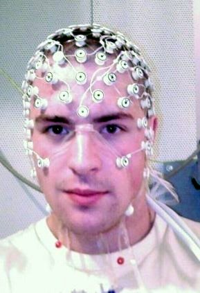

Brain Signals and AI
How brain-computer interfaces help paralyzed patients type and speak again
In conditions like ALS or after a severe brainstem stroke, a person can lose the ability to move or speak while their mind stays completely clear. Since the muscles no longer receive instructions, researchers have been working on ways to read the signal directly from the brain.
Recording signals from the brain
A brain-computer interface (BCI) connects brain activity to a computer. There are two main ways to record the signal. The easiest and safest way is an EEG cap worn on the head, which picks up electrical activity through the scalp. The downside is that the skull blurs the signal, a bit like trying to listen to a conversation in the next room through a thick wall.
For patients with severe paralysis, doctors in clinical trials sometimes place tiny sensor arrays directly on the surface of the motor cortex, the part of the brain that controls movement. Even there, millions of neurons fire at the same time, so the recording looks like noisy waves rather than clear words.

From slow spelling to 62 words per minute
For a long time, brain interfaces were painfully slow. A patient had to move a cursor across an on-screen keyboard and select one letter at a time, typing only a few words per minute. In the last few years, machine learning changed the approach completely:
- Imagined handwriting (2021): researchers at Stanford asked a paralyzed man to imagine holding a pen and writing letters by hand. Even though his hand could not move, his motor cortex still produced the same patterns, and an AI model decoded the letters at 90 characters per minute.
- Attempted speech (2023): in a follow-up study with a patient with ALS, the model learned to recognize the brain activity for 39 English speech sounds when she tried to speak. Combined with an autocomplete language model, her words appeared on screen at 62 words per minute, which is almost half the speed of normal conversation.
Can a computer read your mind?
News headlines often make brain interfaces sound like mind-reading machines, which is not how they work at all. Current decoders cannot read your inner thoughts, memories or feelings. They only pick up motor signals from the movement area of the brain, which means the user has to actively try to move their mouth or hand for the system to decode anything.
Right now, high-speed brain implants only exist in a handful of university hospitals. Before they can become everyday medical tools, the hardware needs to last for years without losing signal quality, and strict rules are needed to protect patients' neural data.
Sources & Image Credits
- Image Credit: EEG recording cap with electrodes (CC BY-SA 3.0, via Wikimedia Commons) - https://commons.wikimedia.org/wiki/File:EEG_cap.jpg
- Willett, F. R. et al. (2023), A High-Performance Speech Neuroprosthesis, Nature: https://www.nature.com/articles/s41586-023-06377-x
- Willett, F. R. et al. (2021), High-Performance Brain-to-Text Communication via Handwriting, Nature: https://www.nature.com/articles/s41586-021-03506-2
- NIH Research Matters - Brain-computer interface helps paralyzed man speak: https://www.nih.gov/news-events/nih-research-matters/brain-computer-interface-helps-paralyzed-man-speak